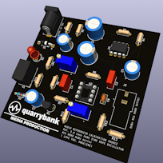
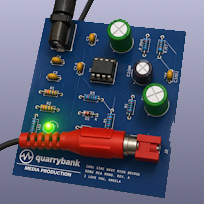
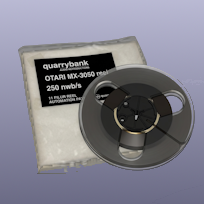
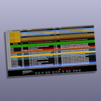
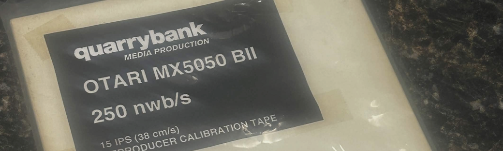
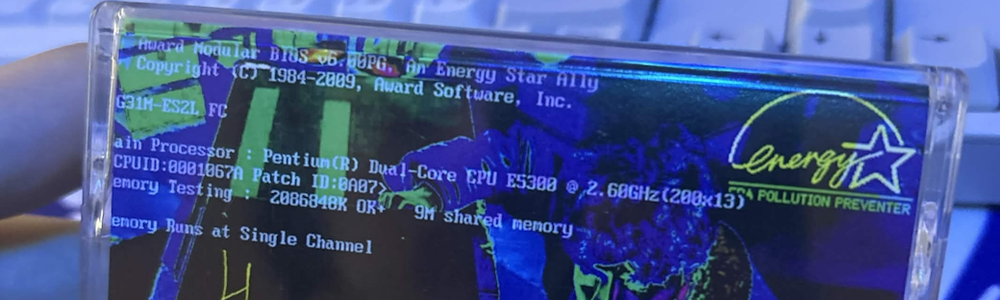
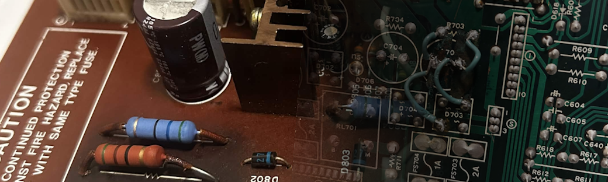

Quarrybank Media Production is a specialist electronics and creative services company that specializes in repairing reel-to-reel tape recorders, assisting recording artists and production of reproducer calibration tapes. We are located in Fort Collins, Colorado.
Our products enable optimal performance across vintage audio equipment, and enable artists and audiophiles to achieve great sonic ability when recording or playing back music.
Using our specialized techniques and equipment, we design, develop, and produce high-performance audio solutions, including calibration tapes for reel-to-reel tape recorders, artist recording services, and expert repairs for both vintage and modern stereo equipment.
Our work includes op-amp replacements and component adjustments, using high-quality electrical components sourced from trusted manufacturers like Nichicon, Texas Instruments, and Vishay Intertechnology.
Quarrybank and the wave logo are NOT registered trademarks of Quarrybank Media Production and/or its subsidiaries.

Development has begun on our Revision 3 hardware. While the ARCS02 serves as a functional entry-level source, the upcoming Rev 3 is being engineered as a "super clean" 1kHz laboratory-grade reference for technicians requiring archival-level precision and ultra-low distortion.

Our foundational hardware signal source, specifically voiced for easy reproduction testing of audio equipment. View Datasheet »

Our first product designed for reel-to-reel repairmen and studio consumers now has a full datasheet. View Datasheet »

A compiled reference sheet for all capacitors in regular usage at Quarrybank. Open in Google Sheets »
Development has begun on our Revision 3 hardware. While the ARCS02 serves as a functional entry-level source, the upcoming Rev 3 is being engineered as a "super clean" 1kHz laboratory-grade reference for technicians requiring archival-level precision and ultra-low distortion.
Our foundational hardware signal source. View Datasheet »
Full datasheet now available. View Datasheet »
Compiled capacitor reference. Open in Google Sheets »
ARCS02 — Audio Reproducer Calibration Source
1kHz oscillators engineered for level alignment and functional machine verification of vintage reel-to-reel equipment.
Datasheet Order
ARCT01 — Audio Reproducer Calibration Tape
15ips 250nWb/m calibration tapes on 7-inch reels. Designed for reel-to-reel repairmen and studio use.
Datasheet Order
Custom Cassettes
High-quality custom cassettes with personalized J-cards and full-color printing.
Inquire
Reel-to-Reel Repairs & Restoration
Specializing in Otari-manufactured machines. Direct connections with Otari Japan for genuine parts and historic schematics.
Get a Quote| Product | Status | Specification | Action |
|---|---|---|---|
| ARCS03 Oscillator | ⟳ In Development | 1kHz, lab-grade, ultra-low distortion | — |
| ARCS02 Oscillator | ✓ Available | 1kHz, level alignment grade | Datasheet |
| ARCT01 Cal. Tape | ✓ Available | 15ips, 250nWb/m, 7-inch reel | Datasheet |
| Custom Cassettes | ✓ Available | Full-color J-cards, custom duplication | Contact |
| R-t-R Repairs (Otari) | ✓ Available | Mechanical & electrical, genuine parts | Contact |
Who We Are
Quarrybank Media Production is a specialist electronics and audio engineering firm. We design, manufacture, and service precision calibration hardware for the professional and enthusiast audio tape community. Our work centers on reel-to-reel tape equipment.
Our Connection
Through established connections with Otari, Inc., Quarrybank has access to factory parts, past engineering schematics, and limited manufacturer technical support. This gives us a significant advantage in diagnosing and restoring Otari-brand reel-to-reel machines to factory specification.